算子开发教程
cann架构
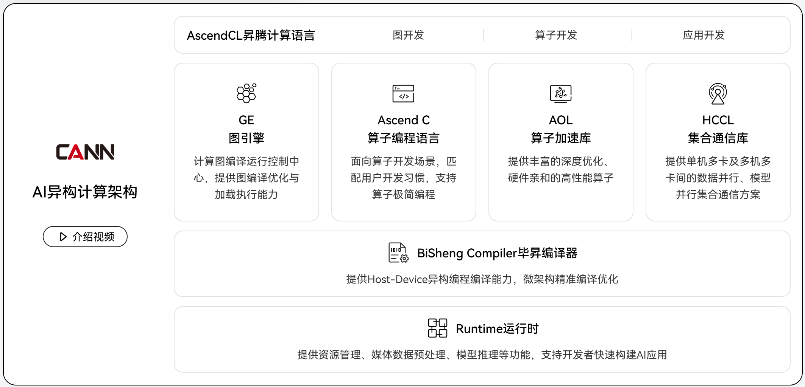
cann类似于cuda，因此底层都是基于bisheng/nvcc编译器的。
算子是通过bisheng编译成动态库的。
硬件架构
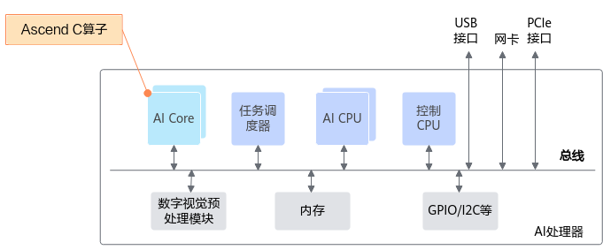
AI Core负责执行标量、向量和张量相关的计算密集型算子，包括三种基础计算单元：Cube（矩阵）计算单元、Vector（向量）计算单元和Scalar（标量）计算单元，同时还包含存储单元（包括硬件存储和用于数据搬运的搬运单元）和控制单元。
- 耦合架构
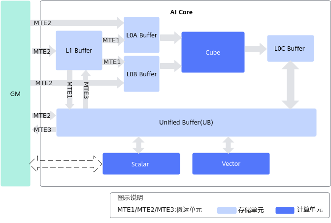
- 分离架构
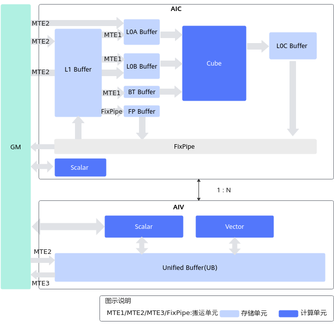
在AI Core中，输入缓冲区之后设置了一个存储转换单元（Memory Transfer Unit，MTE）。这是达芬奇架构的特色之一，主要的目的是为了以极高的效率实现数据格式的转换。比如前面提到GPU要通过矩阵计算来实现卷积，首先要通过Im2Col的方法把输入的网络和特征数据重新以一定的格式排列起来。这一步在GPU当中是通过软件来实现的，效率比较低下。达芬奇架构采用了一个专用的存储转换单元来完成这一过程，将这一步完全固化在硬件电路中，可以在很短的时间之内完成整个转置过程。
这样看，专用硬件上的卷积加速算是走到头了，欸
bisheng Test
测试代码如下：1
2
3
4
5
6
7
8
9
10
11
12
13
14
15
16
17
18
19
20
21
22
23
24
25
26
27
28
29
30
31
32
33
34
35
36
37
38
39
40
41
42
43
44
45
46
47
48
49
50
51
52
53
54
55
56// 文件名QuickStartDemo.cce
// Define a kernel
__global__ __aicore__ void foo(__gm__ uint8_t *Out, int Stride) {
Out[block_idx * Stride] = block_idx;
}
int main(int argc, char *argv[]) {
aclInit(nullptr);
aclrtSetDevice(0);
aclrtStream stream;
aclrtCreateStream(&stream);
uint8_t ExpectedValue[] = {0, 1, 2, 3};
uint8_t *OutputValue = nullptr;
aclrtMalloc((void **)&OutputValue, BLOCKS, ACL_MEM_MALLOC_HUGE_FIRST);
uint8_t InitValue[BLOCKS] = {0};
aclrtMemcpyAsync((void *)OutputValue, sizeof(InitValue), InitValue,
sizeof(InitValue), ACL_MEMCPY_HOST_TO_DEVICE, stream);
aclrtSynchronizeStream(stream);
// Invoke a kernel
foo<<<BLOCKS, nullptr, stream>>>(OutputValue, CACHELINE_SZ);
uint8_t *OutHost = nullptr;
aclrtMallocHost((void **)&OutHost, BLOCKS * CACHELINE_SZ);
aclrtMemcpyAsync(OutHost, BLOCKS * CACHELINE_SZ, OutputValue,
BLOCKS * CACHELINE_SZ, ACL_MEMCPY_DEVICE_TO_HOST, stream);
aclrtSynchronizeStream(stream);
for (int I = 0; I < sizeof(ExpectedValue) / sizeof(uint8_t); I++) {
printf("i%d\t Expect: 0x%04x\t\t\t\tResult: 0x%04x\n", I, ExpectedValue[I],
OutHost[I * CACHELINE_SZ]);
}
aclrtFreeHost(OutHost);
aclrtFree(OutputValue);
aclrtDestroyStream(stream);
aclrtResetDevice(0);
aclFinalize();
return 0;
}
如果你对上面直接使用
bisheng -O2 --cce-soc-version=AscendXXXYY --cce-soc-core-type=VecCore -I$RT_INC -L$RT_LIB -lascendcl -lruntime QuickStartDemo.cce -o QuickStartDemo
会告诉你架构不支持Ascend910B
但是，如果使用官方提供的脚本是可以编译通过的，那我们知道官方示例代码中存在异构代码，因此不可能使用gnu标准的gcc编译器，只有可能使用bisheng。
那我们通过编译官方示例，并查看对应的异构代码的编译命令
进入build目录执行
make VERBOSE=1 | grep add_custom.cpp
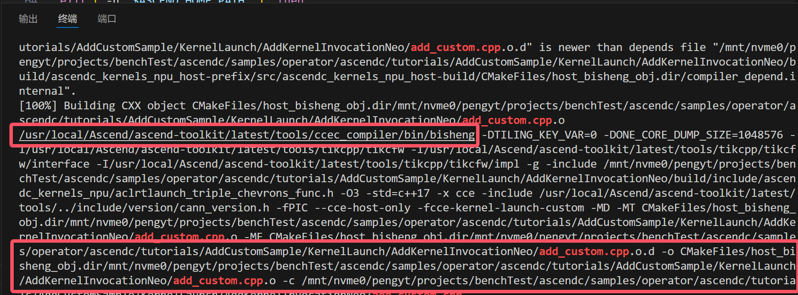
找到编译器实际路径，我们再使用该路径编译器编译代码
还是架构不支持
测试以下编译指令
1 | cc1:=/usr/local/Ascend/ascend-toolkit/latest/compiler/ccec_compiler/bin/bisheng |
使用310P1架构与AICore类型交叉编译，出现链接错误
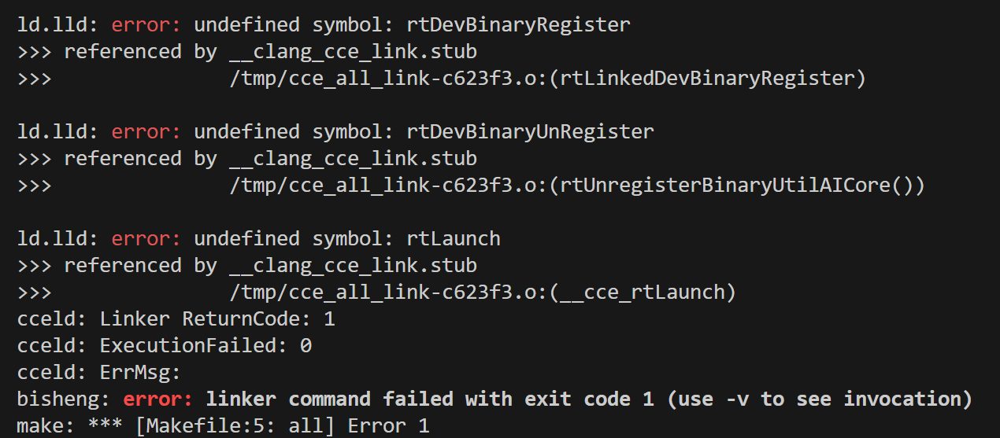
推测当前的编译器仅支持编译算子，并不支持编译为可执行文件（欸，懒得骂了）
kernel算子开发(矩阵乘)
编译
clone算子example，然后执行sudo bash run.sh -r npu -v Ascend910B
编程范式
对于矩阵乘，其运算api为Mmad，但是要执行该操作，需要内存中的数据满足zz的格式。
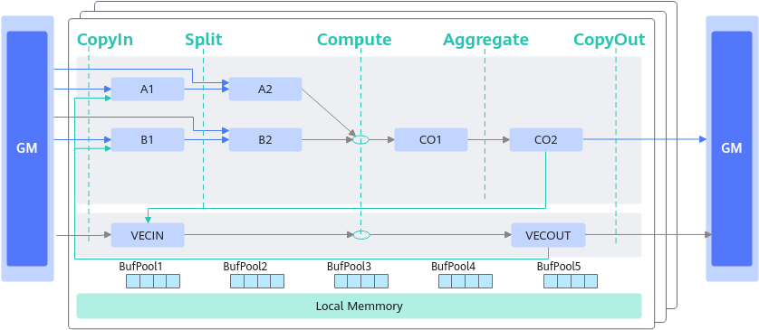
上面是cube的运算流程，使用copyin，compute，copyout的运算流程，核函数中也遵循该流程。
更详细的流程是，先将输入矩阵传入A1，B1，如下：
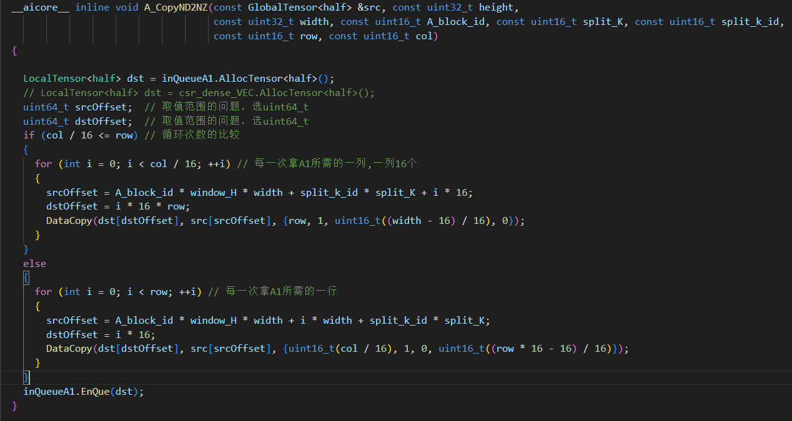
接着将矩阵分块后存入A2，B2，如下:
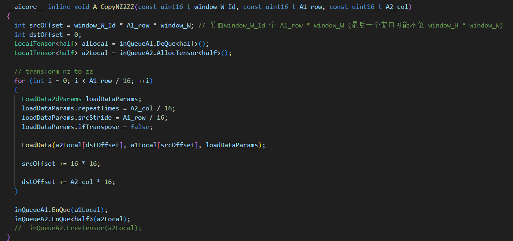
然后进行矩阵运算，Mmad，再将结果输出到CO1，将分块后的结果融合成最终结果，然后存入CO1。
A2与B2内数据格式如下：
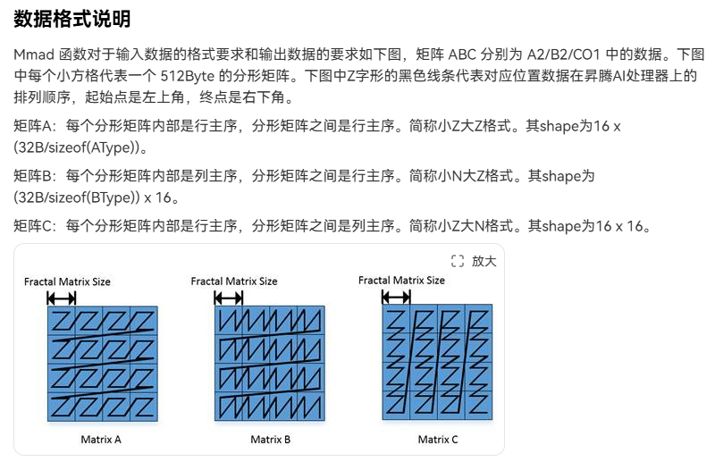
需要注意的是以上流程中的数据搬运都是通过队列排队实现，这样才能够实现流水线的效果。
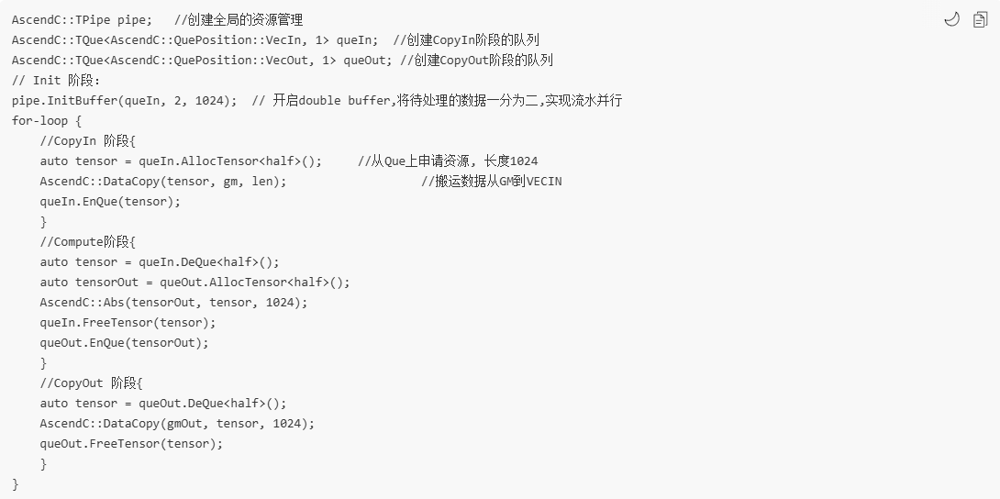
按照上图中的代码，即可实现流水，从逻辑上看，datacopy的工作必然由一个独立单元mte负责，mte与compute单元并行执行才能达到流水的目的。
假证也可推理，即，如果上述代码是串行执行，那么没必要使用queue，直接使用转置后的数据即可。
下面两图协同证明,datacopy任务指令序列在搬运单元中执行，搬运完后执行了setflag通知计算单元：
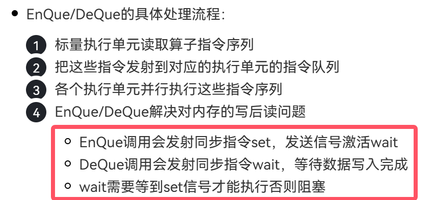
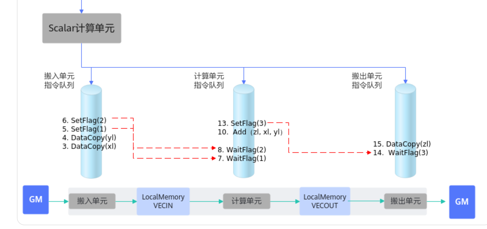
调用
- 创建上下文
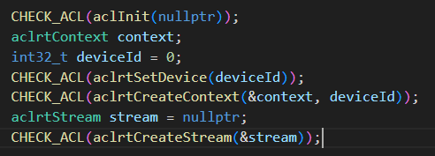
- 分配设备空间
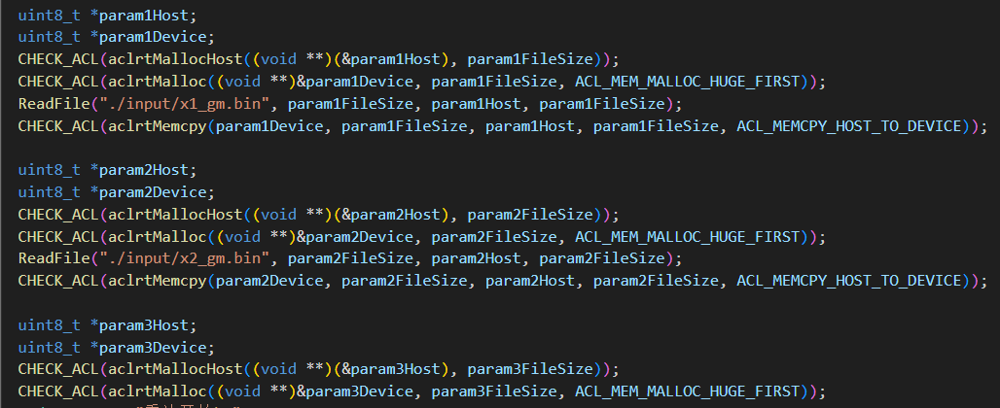
- 调用内核函数
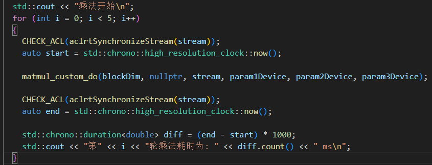